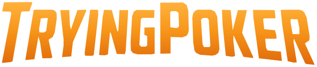
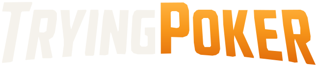
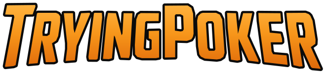
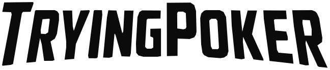
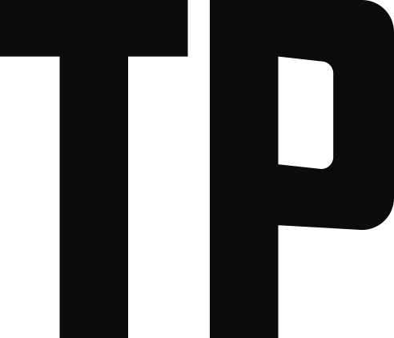
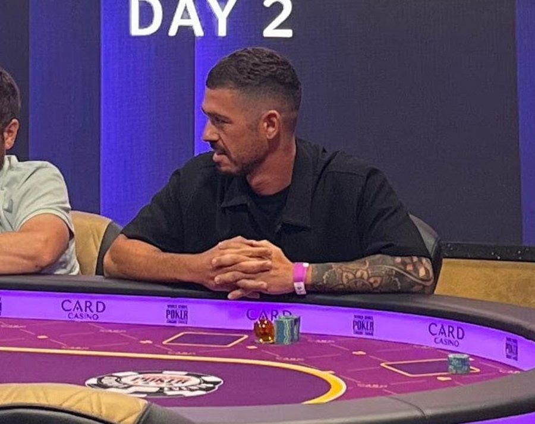
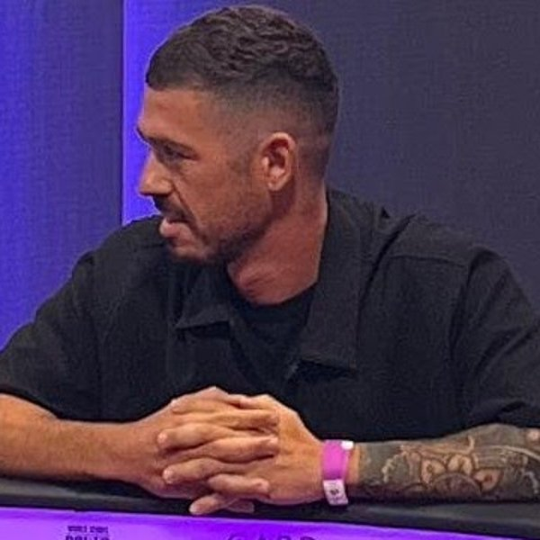

Esencia
Antes de elegir un color hay que saber qué tiene que transmitir. Esta sección es la que se consulta cuando una pieza "no termina de cerrar".
El jugador que se está haciendo profesional mientras trabaja, y te enseña el proceso real, con números.
Posicionamiento. Toni no es el gurú que ya llegó: va dos pasos por delante del que empieza. El nombre lo dice: TryingPoker, el que lo está intentando.
Que el que empieza no se sienta solo
Enseñar el camino real hacia el PLO profesional, con trabajo, malas rachas y meses en negativo incluidos.
Sin filtro, cada mes
Resultados reales, gráficas reales y lo que aprendió. Si el mes fue malo, también se cuenta.
El jugador que empieza
Hombre de 22 a 40 años, España (y Latinoamérica como segundo público), juega online, tiene trabajo y quiere tomarse el póker en serio.
Honestidad
Los números se enseñan aunque duelan. Nunca se maquillan resultados.
Constancia
El póker es a largo plazo, y la marca también. Series fijas, misma estética, mismo día.
De igual a igual
Habla como un compañero de mesa, no como un profesor. Comparte, no sermonea.
Humor
Se ríe del tilt, de los tipos de jugadores y de sí mismo. Aligera un camino duro.
- Un compañero que va un poco más adelante
- Transparente con el dinero y las rachas
- Deportiva, de grind y disciplina
- Madrileña, natural, con humor
- Un gurú que vende el éxito fácil
- Un canal de códigos de afiliado
- Lujo, coches y fajos de billetes
- Casino, ruleta o apuestas deportivas
Voz y tono
La voz es siempre la misma; el tono cambia según el pilar. Todo se escribe en español de España: "vosotros", "tío", euros, "vale".
Directa
Frases cortas. Una idea por frase. El dato primero, la explicación después.
Honesta
Se dice "perdí" y "no lo sé". La vulnerabilidad es la marca, no un recurso.
Útil
Cada pieza deja algo: un dato, un número, un paso. Si no enseña nada, que haga reír.
| Pilar | Tono | Ejemplo de gancho |
|---|---|---|
| El proceso real | Sobrio, transparente, con datos | "Trabajo 8 horas y juego al PLO. Este fue mi octubre." |
| Lo que te pasa es normal | Empático, cercano, tranquilizador | "Si llevas tres meses en negativo, escucha esto." |
| Empieza bien | Claro, didáctico, paso a paso | "Rakeback en Winamax explicado si estás empezando." |
| Vida de jugador | Humor, ritmo, personalidad | "Los 3 tipos de jugadores que te encuentras en PLO." |
- Grindear, sesión, volumen, bankroll, downswing: se usan tal cual, son la jerga del público
- "Sin filtro" para los resultados mensuales
- "El proceso" en vez de "el éxito"
- Cifras siempre exactas: "12.430 manos", no "un montón de manos"
- Voseo o giros argentinos ("vos", "che", "laburo")
- Promesas de dinero: "gana", "hazte rico", "fácil", "garantizado"
- Más de un emoji por frase y emojis como viñetas en piezas gráficas
- Mayúsculas sostenidas en el copy (las mayúsculas son para la tipografía de titulares)
| Parte | Regla | Ejemplo |
|---|---|---|
| Primera línea | Máximo 125 caracteres. Tiene que sobrevivir al corte de "… más" | Octubre: 18.200 manos y −340 €. Y aun así fue mi mejor mes. |
| Cuerpo | 3 a 6 líneas cortas, con espacios. Un aprendizaje concreto | Por qué: jugué menos mesas, revisé cada sesión y no subí de límite en tilt. |
| Una sola acción | Comentar una palabra, guardar o ir al YouTube. Nunca tres a la vez | Comenta PLAN y te paso mi plantilla de seguimiento. |
| Hashtags | 3, al final, del nicho | #poker #plo #pokerespañol |
Los códigos de afiliado no van en el copy de cada reel. Viven en la bio, en la historia destacada "Códigos" y en historias puntuales.
Logo
El logo es la ilustración de Toni: es reconocible, cálido y ya lo asocia su público. Para los tamaños y soportes donde la ilustración no se lee, el sistema tiene un logotipo (solo la palabra, con las mismas letras del logo) y un isologo tipográfico (TP).
Principal Ilustración completa. Avatar de redes, portada de YouTube, cierres de vídeo, web.

Logotipo La palabra del logo, sin el personaje, las cartas ni las fichas. Firmas, pies de carrusel, marcas de agua, merchandising y tamaños chicos.
Isologo y usuario "TP" en círculo, o @tryingpoker, en esquinas de reels, favicon e historias.
X es el alto de la letra "T" de TryingPoker dentro del logo. Nada (texto, bordes, otros logos) entra en ese margen.
| Versión | Pantalla | Impreso |
|---|---|---|
| Logo principal | 120 px de ancho | 25 mm |
| Logotipo | 90 px de ancho | 20 mm |
| Logotipo con contorno | 120 px de ancho | 28 mm |
| Isologo TP en círculo | 24 px | 6 mm |
Por debajo de 120 px la cara deja de leerse: usar el logotipo. En las piezas de 1080 px, el logo va entre 140 y 180 px de ancho.
Sí Negro
Sí Carbón
Sí Foto oscurecida al 55 %
No Fondos claros
No deformar
No recolorear
No rotar
No agregar brillos ni sombras
No sobre naranja o colores de la marca
No rehacer el logotipo con otra fuente
Son las mismas letras del logo, sacadas de la ilustración y redibujadas en vector: sin el personaje, sin la bola, sin cartas ni fichas. Mantiene la identidad (la inclinación, los cortes en las esquinas, la T y la P más altas y la base curva) y se lee bien en cualquier tamaño. Esta versión reemplaza al logotipo en Anton: Anton queda solo para titulares.
Principal Degradado naranja, como en el logo. Sobre negro o carbón.

Bicolor "Trying" en hueso y "Poker" en degradado. Cuando el naranja tiene que destacar poco.

Con contorno Degradado con trazo negro. Sobre fotos y miniaturas de YouTube.

Hueso Marca de agua, bordado y serigrafía a una tinta sobre prendas oscuras.

Negro Fondos claros, impresión en blanco y negro, documentos y facturas.
Negro sobre naranja Etiquetas, stickers y banners de color de marca.
X es el alto de la "O". Alrededor del logotipo queda siempre medio X libre. Proporción fija de 4,7 a 1 (ancho por alto): se escala siempre desde una esquina, sin estirar.
| Situación | Pieza |
|---|---|
| Avatar, cierre de vídeo, portada de YouTube | Ilustración |
| Pie de carrusel, cabecera web, firma de email | Logotipo |
| Marca de agua en reels y vídeos | Logotipo hueso al 60 % |
| Miniatura de YouTube, encima de foto | Logotipo con contorno |
| Merchandising (remera, gorra, taza) | Logotipo a una tinta |
| Menos de 90 px, favicon, sello | Isologo TP |
Sí Degradado sobre negro
Sí Hueso sobre verde oscuro
Sí Negro sobre blanco
Sí Contorno sobre foto
No Degradado sobre blanco
No Naranja sobre naranja
No Sobre verde ficha
No Sin contorno sobre foto clara
Bicolor, abajo a la izquierda, 260 px de ancho en piezas de 1080.
Hueso al 60 %, arriba a la izquierda, 360 px de ancho. Protege el vídeo cuando lo comparten.
Con contorno, arriba a la izquierda. Reemplaza a la ilustración, que en miniatura no se lee.
Remera o buzo negro: logotipo de 22 a 26 cm en el pecho. En serigrafía de una tinta, la versión hueso o naranja.
Centrado dentro de la franja segura de 1546 × 423 px, con una línea en Barlow Condensed debajo.
Versión negra sobre fondo claro, 180 px de ancho en la firma.
No estirar ni comprimir
No cambiar los colores
No reescribirlo con Anton u otra fuente
No agregar brillos, sombras o 3D
No sumarle palos, emojis o la bola
No rotar ni poner en vertical
Pieza aparte del logotipo: el logotipo "TryingPoker" y sus seis versiones se mantienen igual. El isologo son las iniciales, rectas y con el mismo corte: la T blanca y la P en el degradado de marca. Es la pieza para los espacios chicos y cuadrados, donde no entra la palabra completa. Archivo original: isologo-tipografico.ai.
En círculo Versión principal. Avatar, favicon, sello y portadas de historias destacadas.
Solo letras Sobre negro o carbón: esquinas de reels, pie de piezas, merchandising.

Blanco Marca de agua sobre vídeo o foto, bordado y serigrafía a una tinta.

Negro Fondos claros e impresión en blanco y negro.
Negro sobre naranja Stickers, etiquetas y fondos del color de marca.
Escala Se lee hasta 24 px. Por debajo, solo letras sin círculo.
- No usar en el isologo la T inclinada: aquí las dos letras son rectas. La T inclinada sigue siendo la del logotipo de la palabra, que no cambia.
- No cambiar el orden de color (T blanca, P naranja) ni ponerlas las dos en degradado.
- No separar ni juntar las letras: el espacio entre T y P es fijo, como viene en el archivo.


PNG con fondo transparente. Para web, Canva y Figma, mejor el SVG: no pierde calidad a ningún tamaño.
Hoy conviven dos logos: esta ilustración y un logotipo verde en cursiva con una pica, que aparece en algunas miniaturas. Este manual deja solo la ilustración, el logotipo de la palabra y el isologo TP; el verde en cursiva se retira. El logotipo se redibujó a partir del logo que tenemos (700 px), así que es una versión de trabajo: si Toni tiene el archivo original del diseñador, conviene rehacer el vector desde ahí para afinar cada esquina. La bola de dragón forma parte del dibujo y puede quedarse ahí, pero no se usa suelta como recurso gráfico: es un personaje con derechos de autor de otra marca.
Color
Los colores salen del logo: el círculo negro, el naranja del texto y el verde de las fichas. El negro manda, el naranja señala y el verde aparece cuando algo sale bien.
Fondo de todas las piezas. Es el círculo del logo.
Color de marca. Palabra clave del titular, números importantes, botones y etiquetas.
Ganancias, crecimiento, "esto funciona". Acento, nunca fondo grande.
Texto principal. Más cálido que el blanco puro, como los naipes del logo.
Tarjetas y cajas sobre el negro.
Solo pérdidas y errores. Poco y con motivo.
#1E1E1E mesa · #2A2A2A línea · #5E5B56 · #9A968F texto secundario.
#FFB23E naranja claro · #E0690A naranja oscuro · #1F6B2D verde oscuro (fondos de datos positivos).
Si una pieza se ve "naranja", hay demasiado naranja. El naranja tiene que ser lo primero que se mira, y eso funciona solo si es escaso.
Tipografía
Tres fuentes de una misma familia de espíritu: condensadas, deportivas, de marcador. Todas son gratuitas en Google Fonts, así que funcionan en Canva, CapCut, Figma, Premiere y web.
- Rol
- Titulares, números grandes, portadas
- Peso
- Regular (es la única, ya es muy pesada)
- Caja
- Siempre en mayúsculas
- Interlínea
- 0,92 a 1,0
- Tracking
- 0 a +1 %
- Por qué
- Es la más cercana al texto del logo: alta, condensada y con fuerza.
- Rol
- Texto de carruseles, subtítulos largos, web
- Caja
- Oración (mayúscula inicial)
- Interlínea
- 1,35 en piezas, 1,6 en web
- Por qué
- Sobria y legible, con el mismo aire de rótulo deportivo que Anton.
- Rol
- Etiquetas, antetítulos, datos chicos, contadores de carrusel
- Peso
- SemiBold 600 y Bold 700
- Caja
- Mayúsculas con tracking +10 a +14 %
Anton 120–160 px
Anton 80–96 px
Anton 160–240 px
Barlow 500 · 40–46 px
Barlow Cond. 700 · 28–32 px
- Máximo 7 palabras por titular. Si no entra, sobran palabras.
- Una sola palabra (o número) en naranja o degradado por titular.
- Titulares alineados a la izquierda. Centrado solo en subtítulos de vídeo y cierres.
- Nunca Anton en minúsculas ni en párrafos.
- Anton → Bebas Neue o League Gothic (en CapCut: "Anton" existe; si no, "Bebas")
- Barlow → Inter o Arial
- Barlow Condensed → Roboto Condensed
- Para miniaturas de YouTube muy estridentes se permite Anton con trazo negro de 6–10 px
Elementos gráficos
Un juego chico de recursos que salen del mundo del póker y del propio logo. Se usan de a uno o dos por pieza, como detalle.
Picas y tréboles en hueso, corazones y diamantes en naranja (no en rojo: el rojo es de las pérdidas). Sirven de viñeta y de separador.
La ficha del logo. Sello para "consejo", "dato" o el contador de un carrusel. Plana, sin brillos 3D.
Cuatro cartas (PLO), nunca dos. Para enseñar manos se usa este dibujo plano, no fotos de naipes.
Caja de cifra: número en Anton y unidad en Barlow Condensed. Es la firma visual del pilar "El proceso real".
Arriba a la izquierda en portadas y carruseles. Rellena para pilares de valor, con borde para humor y vida.
Barra naranja inclinada debajo de una palabra. Alternativa al degradado; nunca los dos juntos.
Línea de 2 px, puntas redondeadas, en hueso o naranja. Familia de referencia: Lucide (gratis). Nada de iconos 3D, emojis en las piezas gráficas ni clipart de casino.
Negro liso por defecto. Como variación: una viñeta suave hacia los bordes o un grano fino del 3 %. Si se quiere sugerir una mesa, usar #1E1E1E con la forma ovalada, nunca el tapete verde.
Foto y vídeo
Toni es la marca. Las imágenes lo muestran en su contexto real: la mesa, el setup, la ciudad. Nada de bancos de imágenes.


Sí Cálido, negros profundos
No Saturado y lavado
Contraste +10, saturación −10, temperatura un poco cálida, negros profundos y altas luces sin quemar. Piel natural. Una única LUT para todo el contenido.
Encuadre
- Plano medio corto, ojos en el tercio superior
- Cámara a la altura de los ojos, nunca desde abajo
- En vertical, dejar libre el tercio inferior para subtítulos
Luz y fondo
- Luz de ventana o panel a 45°, de frente
- Fondo oscuro con un punto de luz cálida (lámpara, tira LED naranja)
- Evitar el fondo de pared blanca y el contraluz
Vestuario
- Negro o gris oscuro liso, como en el logo
- Sin logos de otras marcas, salvo acuerdo
- Los auriculares y el micro sí: son parte del grinder
Para los días que Toni no quiere salir a cámara: la grabación de las mesas o de la gráfica ocupa la pantalla y su cara va en un círculo con borde naranja de 6 px, en la esquina inferior derecha (en vertical, arriba a la derecha, para no tapar los subtítulos). Su voz en off lleva el vídeo.
Formatos
Una plantilla fija por formato. La grilla de Instagram se tiene que reconocer de lejos como una sola marca.
Foto de Toni arriba, fundido a negro, titular de 2 o 3 líneas con una palabra en degradado. Todo lo importante dentro de la franja central de 1080 × 1440 (lo que muestra la grilla).
Anton blanco con trazo negro, 2 a 4 palabras por línea, la palabra clave en naranja. Por encima del 20 % inferior que tapa la interfaz de Instagram.
Etiqueta del pilar, contador, titular grande y una frase que promete. Márgenes de 88 px. Logotipo y "Desliza" en el pie.
Número de paso en Barlow Condensed, titular Anton de 80 a 96 px, texto Barlow y, si hay, una caja de dato o una captura con borde #2A2A2A.
Fondo negro, pregunta en Anton y el sticker nativo encima. 250 px libres arriba y abajo. Sin logo: en historias ya se ve el avatar.
Puede ser más ruidosa que Instagram: más contraste, trazo negro y cara expresiva. Pero siempre con negro, naranja, Anton y el logotipo con contorno arriba a la izquierda. Máximo 4 palabras. La cara a la derecha, mirando hacia el texto.
| Pieza | Tamaño | Márgenes y zona segura | Exportar |
|---|---|---|---|
| Reel y portada | 1080 × 1920 | Contenido clave entre y = 240 y y = 1680. Subtítulos sobre y = 1500 | MP4 H.264, 30 fps, 15–20 Mbps · portada JPG |
| Carrusel | 1080 × 1350 | 88 px por lado. Pie a 80 px del borde inferior | PNG o JPG al 90 % |
| Historia | 1080 × 1920 | 250 px libres arriba y abajo; 64 px a los lados | PNG o MP4 |
| Miniatura YouTube | 1280 × 720 | Esquina inferior derecha libre (duración del vídeo) | JPG, menos de 2 MB |
| Portada del canal | 2560 × 1440 | Todo lo importante en 1546 × 423 al centro | JPG |
| Avatar | 1080 × 1080 | Logo principal centrado, con aire alrededor del círculo | PNG |
Fondo carbón, borde naranja y un símbolo en Anton o un palo de la baraja. Siempre los mismos cuatro, en este orden.
Motion
El movimiento es seco y con intención, como poner fichas en el bote. Corto, firme y sin rebotes infantiles.
Sube 40 px y aparece. 0,35 s, curva de salida rápida cubic-bezier(.22,1,.36,1). Palabra por palabra en titulares.
Los números cuentan de 0 a la cifra en 0,8 s y cierran con un pequeño rebote (escala 1,08 → 1). Solo para cifras.
Corte seco al ritmo de la voz. Zoom de 100 a 110 % para énfasis. Nada de transiciones de plantilla (cubos, remolinos, brillos).
- Anton, 72–84 px, blanco con trazo negro de 8 px
- La palabra que se dice en ese momento se pinta de naranja
- Entrada de 0,1 s por palabra, sin efectos de pop exagerados
- Cifras de dinero positivas en verde, negativas en rojo
- Sin intro: el gancho va en el primer segundo
- Cierre de 1,5 s: logo principal sobre negro + una sola acción ("Comenta PLAN")
- Sonido: un "chip" de ficha como golpe de marca, siempre el mismo
- Música lo-fi o hip-hop instrumental a −20 dB bajo la voz
Datos y resultados
Los números son el producto de TryingPoker. Se muestran siempre igual para que la serie mensual se reconozca al instante.
Cifras de ejemplo. Línea verde de 3 px con relleno al 12 %, rejilla en #2A2A2A, el peor momento marcado en rojo y el punto final destacado.
- Miles con punto, decimales con coma: 12.430 manos, 6,2 BB/100
- Euro detrás y con espacio: 1.240 €
- Signo siempre visible: +1.240 € · −340 €
- Meses con nombre: "Octubre 2026", no "10/26"
Los meses malos se publican igual que los buenos, con la misma plantilla. Si solo aparecen los meses verdes, la marca pierde lo único que la diferencia.
Marcas y afiliados
TryingPoker convive con salas y herramientas (Winamax, MentoPoker, Hand2Note). La regla es que la pieza siga siendo de Toni.
- Nuestro logo a la izquierda, el de la marca a la derecha, separados por "×"
- Los dos a la misma altura óptica
- Se respeta el color de la marca dentro de su logo; el resto de la pieza sigue en negro y naranja
- Una pieza de Winamax puede usar su rojo como acento en la miniatura, nunca como fondo de la grilla
- Código en Barlow Condensed dentro de una caja con borde naranja: CÓDIGO TRYING
- Una sola marca por pieza
- Si es contenido pagado, se indica con la etiqueta "Colaboración pagada" de Instagram o "Publi" en el copy
- Todo contenido sobre salas lleva "+18 · Juega con responsabilidad" en el pie
- No usar colores ni estética de PsicoPoker o MentoPoker como propios
Antes de publicar
Diez preguntas para revisar cada pieza. Si alguna da "no", se corrige antes de subir.
Recursos
Tokens listos para web, Remotion o HyperFrames, y la lista de archivos de la marca.
:root {
/* Color */
--tp-negro: #0B0B0B;
--tp-carbon: #161616;
--tp-mesa: #1E1E1E;
--tp-linea: #2A2A2A;
--tp-naranja: #F7961A;
--tp-naranja-claro: #FFB23E;
--tp-naranja-oscuro: #E0690A;
--tp-verde: #3DB14F;
--tp-verde-oscuro: #1F6B2D;
--tp-rojo: #E5484D;
--tp-hueso: #F5F2EC;
--tp-gris: #9A968F;
--tp-degradado: linear-gradient(180deg,
#FFB23E 0%, #F7961A 45%, #E0690A 100%);
/* Tipografía */
--tp-display: "Anton", Impact, sans-serif;
--tp-texto: "Barlow", Arial, sans-serif;
--tp-etiqueta: "Barlow Condensed", "Arial Narrow", sans-serif;
/* Forma */
--tp-radio: 6px;
--tp-margen-1080: 88px;
--tp-ease: cubic-bezier(.22, 1, .36, 1);
}
Anton, Barlow y Barlow Condensed en fonts.google.com. Licencia OFL, uso comercial libre.
Identidad/logo-tryingpoker.png: logo principal, fondo transparenteIdentidad/logotipo/: logotipo en 6 versiones (SVG y PNG) e isologo TP (4 versiones). Descargas en la sección 03Identidad/DESIGN.md: este manual en texto, para producciónIdentidad/ref/: miniaturas y portadas actuales de referencia
- Archivo original del logo en alta resolución
- Validar el logotipo de la palabra y retirar el logo verde en cursiva
- Archivo original del diseñador, si existe, para afinar el vector del logotipo
- Confirmar público: ¿solo España o también Latinoamérica?
- Sesión de fotos de una tarde: setup, mesa, ciudad (20 fotos de banco propio)